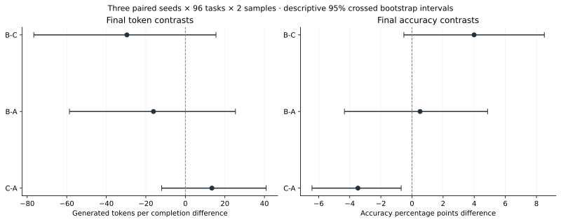
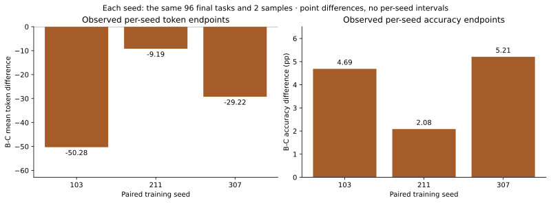
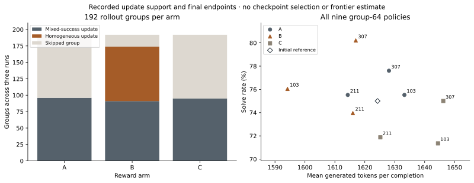
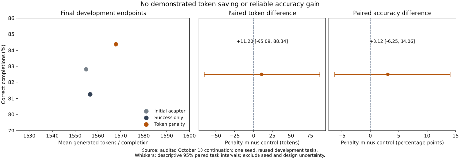
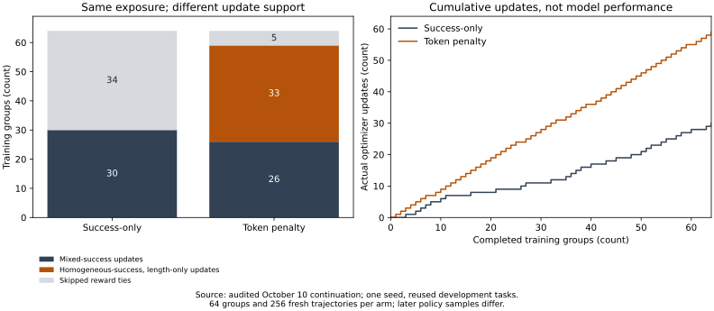
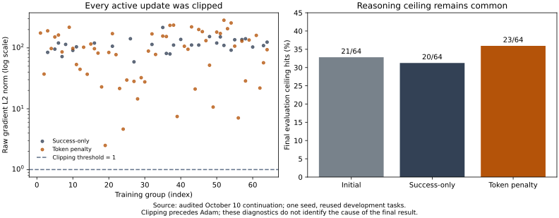

Research notes / October 11, 2026
Reward variation without demonstrated token savings
A token-cost penalty changes update support. A matched three-seed study finds a small, uncertain token difference and fails the registered practical response rule.
Latest finding · three paired seeds
A small point difference.
No promising cost response.
Full penalty uses 1.80% fewer tokens than the homogeneous-success mask. Its descriptive interval crosses zero. All nine workers completed and passed independent frozen-source audit; the registered 10% practical criterion was not met.
Evidence scope Three paired training seeds. Nine fresh policies. 96 previously untouched final tasks, two samples each. Common deterministic CUDA runtime. Descriptive crossed seed/task intervals; synthetic repairs and limited seed uncertainty. An adaptive controller was not tested.
The matched nine-worker study
A: success only. B: success minus tokens/1,024. C: the same penalty with a complete optimizer skip on all-correct or all-incorrect groups. Each final policy was evaluated after 64 rollout groups; checkpoints were not selected by performance.


A promising response required at least 10% token reduction, an entirely negative B-C cost interval, and a negative cost difference in all three seeds. Only the directional condition passed. This negative practical decision does not prove absence of a smaller effect. B-A and C-A are secondary, unadjusted descriptive comparisons.


| Arm | Seed | Correct | Mean tokens | Updates | Masked groups |
|---|---|---|---|---|---|
| A | 103 | 145/192 | 1633.23 | 29 | 0 |
| A | 211 | 145/192 | 1614.31 | 28 | 0 |
| A | 307 | 149/192 | 1628.07 | 39 | 0 |
| B | 103 | 146/192 | 1594.17 | 61 | 0 |
| B | 211 | 142/192 | 1616.01 | 57 | 0 |
| B | 307 | 154/192 | 1616.98 | 56 | 0 |
| C | 103 | 137/192 | 1644.45 | 31 | 33 |
| C | 211 | 138/192 | 1625.19 | 27 | 37 |
| C | 307 | 144/192 | 1646.21 | 37 | 27 |
Each row uses the same 96 tasks with two samples (192 records). The initial reference was measured once: 144/192 correct at 1,624.27 mean tokens. It is not nine independent baselines. The final ceiling-hit rates are A 42.01%, B 42.53%, C 44.27%. These points do not estimate a Pareto frontier.
Recorded mechanism data · Executed method · Raw scientific records and hashes
Same rollout horizon, different optimizer histories
Qwen3-4B with rank-eight LoRA, float32 CUDA, temperature 0.7 and a 2,048-token scratch ceiling. Each worker generated 64 groups of four fresh trajectories. AdamW used learning rate 10⁻⁵, zero weight decay and unit-norm clipping. All 365 active updates were clipped. Every worker passed exact two-update restart and complete-skip probes before training.


Inspect all nine recorded runs
Raw advantages and the effective update.
The mask keeps raw rewards and advantages, sets effective advantages to zero, and completely skips the optimizer and its moments. Later trajectories differ across policies. This inspector does not treat B's homogeneous groups as shared counterfactual groups rescued relative to C.
All nine full terminal archives passed encrypted size/hash verification and independent frozen-source CPU audit. Three approved terminal archive recovery attempts stayed within the original evidence ceiling; there was no replacement worker, retraining or deadline extension. Final inventory and service/process cleanup were verified. The public release contains complete scientific records and CPU reconstruction; actual model/optimizer/RNG binaries and provider records remain private.
The one-seed development study
The earlier continuation used a reused control and 32 inspected development tasks. Its outcome was +0.72% tokens, with principal intervals including zero. Its records, group inspector and examples are retained below and are not pooled with the new study.
Final outcomes & uncertainty
Compare the final policies on the same 32 development tasks, with two matched samples per task.

The cost difference is +11.20 tokens, with a descriptive 95% task interval of −65.09 to +88.34. Accuracy differs by +3.125 percentage points, interval −6.25 to +14.06. The intervals omit training-seed and design-selection uncertainty. These are final endpoints, not selected checkpoints or a measured Pareto frontier.
Where the extra updates come from
When all four answers are correct, success-only rewards tie. Different lengths can still create an advantage signal under the token penalty.

Inspect the recorded groups
Four trajectories, one update decision.
Positive advantages favor a sampled trajectory; negative advantages discourage it. All first-group trajectories match across arms. Later samples differ as policies diverge, so this inspector is not a shared-trajectory counterfactual.
Clipping & reasoning ceilings
Every active update is clipped before Adam. Reasoning ceilings remain common in both final policies.

Clipping scales raw gradients, but Adam’s moments prevent interpreting that scale as a proportional reduction in the parameter step. These diagnostics do not establish clipping as the cause of the endpoint, or show that a longer reasoning allowance would help.
Look inside the repairs
Four recorded pairs: one illustration from each correctness outcome. Expand a pair to inspect the task, answer, length and reasoning.
01Both incorrectfloor composition · 2,049 / 2,049 tokens
v3-t3-dev-00010 · Sample 1 · Seed 36262015
Answer B Incorrect
2,049 tokens · Ceiling hit
Read recorded reasoning
x=-4, y=6: A: abs((abs((9*(-4)//5 - 3) + 7)//4 - 9) + abs((abs((4*6)//2 - 6) + 3)//5 - 4)) → 9*(-4) = -36 //5 = -7 → abs(-7 -3)=10 → 10+7=17 → 17//4=4 → 4-9=-5 → abs(-5)=5 → 4*6=24 //2=12 → 12-6=6 → abs(6)=6 → 6+3=9 → 9//5=1 → 1-4=-3 → abs(-3)=3 → 5+3=8 ✅ x=-9, y=3: A: abs((abs((9*(-9)//5 -3)+7)//4 -9)) + abs((abs((4*3)//2 -6)+3)//5 -4) → 9*(-9) = -81 //5 = -16 → abs(-16-3)=19 → 19+7=26 → 26//4=6 → 6-9=-3 → abs=3 → 4*3=12 //2=6 → 6-6=0 → abs=0 → 0+3=3 → 3//5=0 → 0-4=-4 → abs=4 → 3+4=7 ❌ expected 6 → fail B: abs((abs((10*x)//5 -3)+7)//4 -9) + abs((abs((5*y)//2 -6)+3)//5 -4) x=-9: 10*(-9) = -90 //5 = -18 → -18-3 = -21 → +7 = -14 → //4 = -4 → -4-9 = -13 → abs=13 y=3: 5*3=15 //2 = 7 → 7-6=1 → +3=4 → //5=0 → 0-4=-4 → abs=4 → 13+4=17 ❌ expected 6 C: same as B → same failure → fail D: abs((abs((9*x)//5 -3)+7)//4 -9) + abs((abs((5*y)//2 -6)+3)//5 -4) x=-9: 9*(-9) = -81 //5 = -16 → -16-3 = -19 → +7 = -12 → //4 = -3 → -3-9 = -12 → abs=12 y=3: 5*3=15 //2 = 7 → 7-6=1 → +3=4 → //5=0 → 0-4=-4 → abs=4 → 12+4=16 ❌ expected 6 So A failed at x=-9,y=3 → fails Wait — earlier A gave 8 for first pair, but failed second. But let's recheck A on first pair: x=-4, y=6 (9*x)//5 = (9*(-4))//5 = -36//5 = -8 (since floor division rounds down) -36//5 = -8 → -8 -3 = -11 → abs(-11)=11 → 11+7=18 → 18//4=4 (18//4=4.5→4) → 4-9=-5 → abs=5 (4*y)//2 = (24)//2=12 → 12-6=6 → abs=6 → +3=9 → 9//5=1 → 1-4=-3 → abs=3 5+3=8 ✅ x=-9, y=3 9*(-9) = -81 //5 = -17 (since -81//5 = -16.2 → -17) -17 -3 = -20 → abs=20 → +7=27 → //4 = 6 (27//4=6) → 6-9=-3 → abs=3 5*3=15 //2 = 7 → 7-6=1 → +3=4 → //5=0 → 0-4=-4 → abs=4 → 3+4=7 ❌ expected 6 So A fails. Now check if any expression gives 6 for x=-9,y=3. Try candidate B again: x=-9: (10*x)//5 = -90//5 = -18 → -18 -3 = -21 → +7 = -14 → //4 = -4 (since -14//4 = -4) → -4-9 = -13 → abs=13 y=3: (5*3)//2 = 15//2 = 7 → 7-6=1 → +3=4 → //5=0 → 0-4=-4 → abs=4 → 13+4=17 ❌ C: same as B → 17 ❌ D: (9*x)//5 = -81//5 = -17 → -17-3=-20 → +7=-13 → //4 = -4 (since -13//4 = -4) → -4-9=-13 → abs=13 (5*y)//2 = 15//2=7 → same → 4 → abs=4 → 13+4=17 ❌ All fail? But one must work. Wait — perhaps I miscalculated the first pair. Try candidate A again with x=1, y=8 → expected 9 A: (9*1)//5 = 9//5 = 1 → 1-3 = -2 → abs=2 → +7=9 → //4 = 2 → 2-9 = -7 → abs=7 (4*8)=32 //2=16 → 16-6=10 → abs=10 → +3=13 → //5=2 → 2-4=-2 → abs=2 7+2=9 ✅ x=11, y=-6 → expected 3 (9*11)=99//5=19 → 19-3=16 → abs=16 → +7=23 → //4=5 → 5-9=-4 → abs=4 (4*(-6))=-24 //2 = -12 → -12-6=-18 → abs=18 → +3=21 → //5=4 → 4-4=0 → abs=0 4+0=4 ❌ expected 3 → fail Now try B: x=11: (10*11)//5 = 110//5=22 → 22-3=19 → +7=26 → //4=6 → 6-9=-3 → abs=3 y=-6: (5*(-6))//2 = -30//2 = -15 → -15-6=-21 → abs=21 → +3=24 → //5=4 → 4-4=0 → abs=0 3+0=3 ✅ x=-9,y=3: (10*(-9))//5 = -90//5 = -18 → -18-3=-21 → +7=-14 → //4 = -4 → -4-9=-13 → abs=13 (5*3)//2 = 15//2 = 7 → 7-6=1 → +3=4 → //5=0 → 0-4=-4 → abs=4 → 13+4=17 ❌ Still fails. Try C: same as B → same values → fails Try D: x=11: (9*11)//5 = 99//5=19 → 19-3=16 → +7=23 → //4=5 → 5-9=-4 → abs=4 y=-6: (5*(-6))//2 = -30//2=-15 → -15-6=-21 → +3=-18 → abs=18 → +3=21 → //5=4 → 4-4=0 → abs=0 4+0=4 ❌ expected 3 Now check if any expression gives correct output for all. Try A on x=-9,y=3: we had 7 → expected 6 → fail Is there a candidate that gives 6? Try to reverse-engineer. We need a function f(x,y) that outputs: x=-4,y=6 → 8 x=-9,y=3 → 6 x=1,y=8 → 9 x=11,y=-6 → 3 Try candidate D on x=-9,y=3: (9*x)//5 = 9*(-9
Answer A Incorrect
2,049 tokens · Ceiling hit
Read recorded reasoning
x=-4, y=6: A: abs((abs((9*(-4)//5 - 3) + 7)//4 - 9) + abs((abs((4*6)//2 - 6) + 3)//5 - 4)) → 9*(-4) = -36 //5 = -7 → abs(-7 -3)=10 → 10+7=17 → 17//4=4 → 4-9=-5 → abs(-5)=5 → 4*6=24 //2=12 → 12-6=6 → abs(6)=6 → 6+3=9 → 9//5=1 → 1-4=-3 → abs(-3)=3 → 5+3=8 ✅ x=-9, y=3: A: abs((abs((9*(-9)//5 -3)+7)//4 -9)) + abs((abs((4*3)//2 -6)+3)//5 -4) → 9*(-9) = -81 //5 = -16 → abs(-16-3)=19 → 19+7=26 → 26//4=6 → 6-9=-3 → abs=3 → 4*3=12 //2=6 → 6-6=0 → abs=0 → 0+3=3 → 3//5=0 → 0-4=-4 → abs=4 → 3+4=7 ❌ expected 6 → fail B: abs((abs((10*(-4)//5 -3)+7)//4 -9)) + abs((abs((5*6)//2 -6)+3)//5 -4) → 10*(-4)=-40 //5=-8 → abs(-8-3)=11 → 11+7=18 → 18//4=4 → 4-9=-5 → abs=5 → 5*6=30 //2=15 → 15-6=9 → abs=9 → 9+3=12 → 12//5=2 → 2-4=-2 → abs=2 → 5+2=7 ❌ expected 8 → fail C: same as B → same result → fail D: abs((abs((9*(-4)//5 -3)+7)//4 -9)) + abs((abs((5*6)//2 -6)+3)//5 -4) → 9*(-4)=-36 //5=-7 → abs(-7-3)=10 → 10+7=17 → 17//4=4 → 4-9=-5 → abs=5 → 5*6=30 //2=15 → 15-6=9 → abs=9 → 9+3=12 → 12//5=2 → 2-4=-2 → abs=2 → 5+2=7 ❌ expected 8 → fail A fails at x=-9,y=3 → not correct. No candidate passes all. Wait — recheck A at x=-9,y=3: A: abs((abs((9*(-9)//5 -3)+7)//4 -9)) 9*(-9) = -81 //5 = -16.2 → floor? Integer division in Python is floor division. -81 // 5 = -17 (since -81 / 5 = -16.2 → floor is -17) → -17 -3 = -20 → abs = 20 → +7 = 27 → 27//4 = 6 → 6-9 = -3 → abs = 3 y part: (4*3)//2 = 12//2 = 6 → 6-6=0 → abs=0 → +3=3 → 3//5=0 → 0-4=-4 → abs=4 3+4=7 → expected 6 → fail All fail? But let's check if any matches first example. x=1,y=8 → expected 9 Try A: x=1: 9*1=9 //5=1 → 1-3=-2 → abs=2 → +7=9 → 9//4=2 → 2-9=-7 → abs=7 y=8: 4*8=32 //2=16 → 16-6=10 → abs=10 → +3=13 → 13//5=2 → 2-4=-2 → abs=2 7+2=9 ✅ x=11,y=-6 → expected 3 A: x=11: 9*11=99 //5=19 → 19-3=16 → abs=16 → +7=23 → 23//4=5 → 5-9=-4 → abs=4 y=-6: 4*(-6)=-24 //2=-12 → -12-6=-18 → abs=18 → +3=21 → 21//5=4 → 4-4=0 → abs=0 4+0=4 ❌ expected 3 So A fails at x=11,y=-6 B: x=11: 10*11=110 //5=22 → 22-3=19 → abs=19 → +7=26 → 26//4=6 → 6-9=-3 → abs=3 y=-6: 5*(-6)=-30 //2=-15 → -15-6=-21 → abs=21 → +3=24 → 24//5=4 → 4-4=0 → abs=0 3+0=3 ✅ x=1,y=8: B: x part: 10*1=10//5=2 → 2-3=-1 → abs=1 → +7=8 → 8//4=2 → 2-9=-7 → abs=7 y part: 5*8=40//2=20 → 20-6=14 → abs=14 → +3=17 → 17//5=3 → 3-4=-1 → abs=1 7+1=8 ❌ expected 9 → fail C: same as B → same failure D: x=1: 9*1=9//5=1 → 1-3=-2 → abs=2 → +7=9 → 9//4=2 → 2-9=-7 → abs=7 y=8: 5*8=40//2=20 → 20-6=14 → abs=14 → +3=17 → 17//5=3 → 3-4=-1 → abs=1 7+1=8 ❌ expected 9 → fail Only B passed x=11,y=-6, but failed x=1,y=8. Is there a candidate that works on first three? x=-4,y=6 → expected 8 Try B: x=-4: 10*(-4)=-40//5=-8 → -8-3=-11 → abs=11 → +7=18 → 18//4=4 → 4-9=-5 → abs=5 y=6: 5*6=30//2=15 → 15-6=9 → abs=9 → +3=12 → 12//5=2 → 2-4=-2 → abs=2 5+2=7 ❌ expected 8 No. Wait — maybe I made a mistake in the y part of D. D: y part: (abs((5*y)//2 -6) +3)//5 -4 At y=6: (5*6)=30//2=15 → 15-6=9 → abs=9 → +3=12 → 12//5=2 → 2-4=-2 → abs=2 → so part is 2 x part: 9*(-4)=-36//5 = -7.2 → floor to -8? -36//5 = -8? In Python: -36 // 5 = -8 (since 5*(-8) = -40, which is less than -36) → correct -8 -3 = -11 → abs=11 → +7=18 → 18//4=4 → 4-9=-5 → abs=5 5+2=7 → not 8 All fail? But must be one. Try candidate C and D with x=1,y=8. C: x=1: (10*1//5)=2 → 2-3=-1 → abs=1 → +7=8 → 8//4=2 → 2-9=-7 → abs=7 y=8: (5*8//2)=40//2
Inspect the task and candidate repairs
Candidate expressions
abs((abs((9 * x) // 5 - 3) + 7) // 4 - 9) + abs((abs((4 * y) // 2 - 6) + 3) // 5 - 4)abs((abs((10 * x) // 5 - 3) + 7) // 4 - 9) + abs((abs((5 * y) // 2 - 6) + 3) // 5 - 4)abs((abs((10 * x) // 5 - 3) + 7) // 4 - 9) + abs((abs((4 * y) // 2 - 6) + 3) // 5 - 4)abs((abs((9 * x) // 5 - 3) + 7) // 4 - 9) + abs((abs((5 * y) // 2 - 6) + 3) // 5 - 4)
Audited target: abs((abs((10 * x) // 5 - 3) + 7) // 4 - 9) + abs((abs((4 * y) // 2 - 6) + 3) // 5 - 4)
Visible examples
| x | y | Output |
|---|---|---|
| -4 | 6 | 8 |
| -9 | 3 | 6 |
| 1 | 8 | 9 |
| 11 | -6 | 3 |
02Penalty correct onlynested absolute · 2,049 / 2,049 tokens
v3-t3-dev-00004 · Sample 0 · Seed 36261405
Answer A Incorrect
2,049 tokens · Ceiling hit
Read recorded reasoning
x=7, y=-3 → 3 x=-15, y=11 → 5 x=15, y=6 → 6 x=14, y=7 → 6 Test A: x=7, y=-3: abs(abs(abs(abs(7-2)-8)-7)-6) = abs(abs(abs(5-8)-7)-6) = abs(abs(3-7)-6) = abs(4-6) = 2 abs(abs(abs(abs(-3-7)-6)-4)-3) = abs(abs(abs(-10-6)-6)-4)-3) = abs(abs(-16-6)-4)-3) = abs(-22-4)-3 = abs(-26)-3 = 26-3 = 23 Total: 2 + 23 = 25 → not 3 → fail Test B: x=7, y=-3: abs(abs(abs(abs(7+2)-8)-7)-6) = abs(abs(abs(9-8)-7)-6) = abs(abs(1-7)-6) = abs(6-6) = 0 abs(abs(abs(abs(-3-7)-6)-4)-3) = abs(abs(abs(-10-6)-6)-4)-3) = abs(abs(-16-6)-4)-3) = abs(-22-4)-3 = 26-3 = 23 Total: 0 + 23 = 23 → not 3 → fail Test C: x=7, y=-3: abs(abs(abs(abs(7-2)-8)-7)-6) = abs(abs(abs(5-8)-7)-6) = abs(abs(3-7)-6) = abs(4-6) = 2 abs(abs(abs(abs(-3+7)-6)-4)-3) = abs(abs(abs(4-6)-4)-3) = abs(abs(-2-4)-3) = abs(-6-3) = 9 Total: 2 + 9 = 11 → not 3 → fail Test D: x=7, y=-3: abs(abs(abs(abs(7+2)-8)-7)-6) = abs(abs(abs(9-8)-7)-6) = abs(abs(1-7)-6) = abs(6-6) = 0 abs(abs(abs(abs(-3+7)-6)-4)-3) = abs(abs(abs(4-6)-4)-3) = abs(abs(-2-4)-3) = abs(-6-3) = 9 Total: 0 + 9 = 9 → not 3 → fail All candidates fail? But problem says "only one" satisfies every pair. Wait — recheck the first example: x=7, y=-3 → 3 Try to reverse engineer. Try candidate A again, more carefully: x=7, y=-3 x-2 = 5 abs(5-8)=3 abs(3-7)=4 abs(4-6)=2 y-7 = -10 abs(-10-6)=16 abs(16-4)=12 abs(12-3)=9 → too big Wait — maybe I misread the structure. All expressions are of form: abs(abs(abs(abs(x ± a) - b) - c) - d) + same for y with similar constants Try to find expression that gives 3 for (7,-3) Try candidate D: x=7+2=9 → abs(9-8)=1 → abs(1-7)=6 → abs(6-6)=0 → abs(0-6)=6? Wait no: Wait expression D: abs(abs(abs(abs(x+2)-8)-7)-6) → x=7: x+2=9 → abs(9-8)=1 → abs(1-7)=6 → abs(6-6)=0 y=-3: y+7=4 → abs(4-6)=2 → abs(2-4)=2 → abs(2-3)=1 Wait! I made a mistake earlier — the y part is: abs(abs(abs(abs(y+7)-6)-4)-3) y=-3 → y+7=4 abs(4-6)=2 abs(2-4)=2 abs(2-3)=1 → not 1, wait: abs(2-4)=2, then abs(2-3)=1 → total = 0 + 1 = 1 → not 3 Still not 3. Wait — maybe I misread the expression. Let me write it again: A: abs(abs(abs(abs(x-2)-8)-7)-6) + abs(abs(abs(abs(y-7)-6)-4)-3) B: abs(abs(abs(abs(x+2)-8)-7)-6) + abs(abs(abs(abs(y-7)-6)-4)-3) C: abs(abs(abs(abs(x-2)-8)-7)-6) + abs(abs(abs(abs(y+7)-6)-4)-3) D: abs(abs(abs(abs(x+2)-8)-7)-6) + abs(abs(abs(abs(y+7)-6)-4)-3) Try A with x=7, y=-3: x-2 = 5 abs(5-8)=3 abs(3-7)=4 abs(4-6)=2 y-7 = -10 abs(-10-6)=16 abs(16-4)=12 abs(12-3)=9 Sum: 2+9=11 → no Try B: x=7: x+2=9 → abs(9-8)=1 → abs(1-7)=6 → abs(6-6)=0 y=-3: y-7=-10 → abs(-10-6)=16 → abs(16-4)=12 → abs(12-3)=9 → sum=0+9=9 → no C: x=7: x-2=5 → abs(5-8)=3 → abs(3-7)=4 → abs(4-6)=2 y=-3: y+7=4 → abs(4-6)=2 → abs(2-4)=2 → abs(2-3)=1 → sum=2+1=3 → YES! Now check second pair: x=-15, y=11 → should be 5 C: x=-15: x-2 = -17 abs(-17-8)=25 abs(25-7)=18 abs(18-6)=12 → 12 y=11: y+7=18 abs(18-6)=12 abs(12-4)=8 abs(8-3)=5 → 5 Sum: 12+5=17 → not 5 → fail Wait — no. Wait — the expression is: abs(abs(abs(abs(x-2)-8)-7)-6) → so nested abs x=-15: x-2 = -17 abs(-17) = 17 17 - 8 = 9 → abs(9)=9 9 - 7 = 2 → abs(2)=2 2 - 6 = -4 → abs(-4)=4 → 4 y=11: y+7=18 abs(18-6)=12 abs(12-4)=8 abs(8-3)=5 → 5 Sum: 4+5=9 → not 5 → fail No. Try D: x=7, y=-3 x=7: x+2=9 → abs(9-8)=1 → abs(1-7)=6 → abs(6-6)=0 y=-3: y+7=4 → abs(4-6)=2 → abs(2-4)=2 → abs(2-3)=1 → sum=0+1=1 → not 3 No. Try B with x=7, y=-3: x=7: x+2=9 → abs(9-8)=1 → abs(1-7)=6 → abs(6-6)=0 y=-3: y-7=-10 → abs(-10-6)=16 → abs(16-4)=12 → abs(12-3)=9 → sum=0+9=9 → no A: x=7,y=-3 → x part: 2, y part: y-7=-10 → abs(-10-6)=16 → abs(16-4)=12 → abs(12-3)=9 → sum=11 → no Wait — perhaps I made a mistake in the y part. Let’s redefine the structure. All expressions have the form: outer: abs( ... ) four levels: | | | | val - c | - d | - e | - f | So for x: | | | | x ± a | - b | - c | - d | - e | For each, compute step by
Answer B Correct
2,049 tokens · Ceiling hit
Read recorded reasoning
x=7, y=-3 → 3 x=-15, y=11 → 5 x=15, y=6 → 6 x=14, y=7 → 6 Test A: x=7, y=-3: abs(abs(abs(abs(7-2)-8)-7)-6) = abs(abs(abs(5-8)-7)-6) = abs(abs(3-7)-6) = abs(4-6) = 2 abs(abs(abs(abs(-3-7)-6)-4)-3) = abs(abs(abs(-10-6)-6)-4)-3) = abs(abs(16-6)-4)-3) = abs(10-4)-3 = 6-3 = 3 Total: 2+3 = 5 → should be 3 → mismatch Fail A. Test B: x=7, y=-3: abs(abs(abs(abs(7+2)-8)-7)-6) = abs(abs(abs(9-8)-7)-6) = abs(abs(1-7)-6) = abs(6-6) = 0 abs(abs(abs(abs(-3-7)-6)-4)-3) = abs(abs(abs(-10-6)-6)-4)-3) = abs(abs(16-6)-4)-3) = abs(10-4)-3 = 6-3 = 3 Total: 0+3 = 3 → good x=-15, y=11: abs(abs(abs(abs(-15+2)-8)-7)-6) = abs(abs(abs(-13-8)-7)-6) = abs(abs(-21-7)-6) = abs(-28-6) = 34 Wait — too large. Let's step carefully: abs(-15+2) = 13 abs(13-8)=5 abs(5-7)=2 abs(2-6)=4 → first part: 4 y=11: abs(abs(abs(abs(11-7)-6)-4)-3) = abs(abs(abs(4-6)-4)-3) = abs(abs(2-4)-3) = abs(2-3)=1 Total: 4+1 = 5 → good x=15, y=6: x part: abs(abs(abs(abs(15+2)-8)-7)-6) = abs(abs(abs(17-8)-7)-6) = abs(abs(9-7)-6)=abs(2-6)=4 y part: abs(abs(abs(abs(6-7)-6)-4)-3) = abs(abs(abs(-1-6)-4)-3)=abs(abs(7-4)-3)=abs(3-3)=0 Total: 4+0=4 → should be 6 → mismatch Fail B. Test C: x=7, y=-3: x part: abs(abs(abs(abs(7-2)-8)-7)-6) = abs(abs(abs(5-8)-7)-6)=abs(abs(3-7)-6)=abs(4-6)=2 y part: abs(abs(abs(abs(-3+7)-6)-4)-3)=abs(abs(abs(4-6)-4)-3)=abs(abs(2-4)-3)=abs(2-3)=1 Total: 2+1=3 → good x=-15, y=11: x part: same as A: abs(abs(abs(abs(-15-2)-8)-7)-6) = abs(abs(abs(-17-8)-7)-6)=abs(abs(-25-7)-6)=abs(-32-6)=38 → too big Wait: step by step: x=-15: abs(-15-2)=17 abs(17-8)=9 abs(9-7)=2 abs(2-6)=4 → x part = 4 y=11: abs(abs(abs(abs(11+7)-6)-4)-3)=abs(abs(abs(18-6)-4)-3)=abs(abs(12-4)-3)=abs(8-3)=5 Total: 4+5=9 → should be 5 → mismatch Fail C. Test D: x=7, y=-3: x: abs(abs(abs(abs(7+2)-8)-7)-6)=abs(abs(abs(9-8)-7)-6)=abs(abs(1-7)-6)=abs(6-6)=0 y: abs(abs(abs(abs(-3+7)-6)-4)-3)=abs(abs(abs(4-6)-4)-3)=abs(abs(2-4)-3)=abs(2-3)=1 Total: 0+1=1 → should be 3 → mismatch Fail D. All fail? But must have one correct. Wait — recheck B. x=15, y=6 → should be 6 B: x=15: abs(abs(abs(abs(15+2)-8)-7)-6) 17-8=9 → 9-7=2 → 2-6 = -4 → abs=4 y=6: abs(abs(abs(abs(6-7)-6)-4)-3) = abs(abs(abs(-1-6)-4)-3)=abs(abs(7-4)-3)=abs(3-3)=0 4+0=4 ≠ 6 → fail Wait — perhaps I miscalculated the pattern. Look at the outputs: x=7,y=-3 → 3 x=-15,y=11 → 5 x=15,y=6 → 6 x=14,y=7 → 6 Try to reverse-engineer. Try A again with x=7,y=-3: x: abs(abs(abs(abs(7-2)-8)-7)-6) 5-8=-3 → abs=3 3-7=-4 → abs=4 4-7=-3 → abs=3 3-6=-3 → abs=3 → x part = 3 y: abs(abs(abs(abs(-3-7)-6)-4)-3) -10-6=-16 → abs=16 16-6=10 10-4=6 6-3=3 → y part =3 Total: 3+3=6 → should be 3 → fail Wait — earlier I messed up. Correct step-by-step for A: x=7: x-2=5 abs(5)=5 5-8=-3 → abs=3 3-7=-4 → abs=4 4-6=-2 → abs=2 → x part = 2 y=-3: y-7=-10 → abs=10 10-6=4 4-4=0 0-3=-3 → abs=3 → y part=3 Total: 2+3=5 → should be 3 → fail Try B: x=7,y=-3 x+2=9 9-8=1 1-7=-6 → abs=6 6-6=0 → x part=0 y: -3-7=-10 →10→10-6=4→4-4=0→0-3=-3→3 → y part=3 Total: 0+3=3 → good x=-15,y=11 x+2=-13 → abs=13 13-8=5 5-7=-2 → abs=2 2-6=-4 → abs=4 → x part=4 y=11: 11-7=4 →4-6=-2 → abs=2 →2-4=-2 → abs=2 →2-3=-1 → abs=1 → y part=1 Total: 4+1=5 → good x=15,y=6 x+2=17 →17-8=9 →9-7=2 →2-6=-4 → abs=4 y=6: 6-7=-1 →1-6=-5 →5-4=1 →1-3=-2 → abs=2 Total: 4+2=6 → good x=14,y=7 x+2=16 →16-8=8 →8-7=1 →1-6=-5 → abs=5 y=7: 7-7=0 →0-6=-6 →6-4=2 →2-3=-1 → abs=1 Total: 5+1=6 → good All match! So B works. Earlier I made a mistake in y part of B for x=15,y=6. Correct y part: abs(abs(abs(abs(y-7)-6)-4)-3) y=6: 6-7=-1 → abs=1 1-6=-5 → abs=5 5-4=1 →1-3=-2 → abs=2 → yes, 2 x part: 15+2=17 →17-8=9 →9-7=2
Inspect the task and candidate repairs
Candidate expressions
abs(abs(abs(abs(x - 2) - 8) - 7) - 6) + abs(abs(abs(abs(y - 7) - 6) - 4) - 3)abs(abs(abs(abs(x + 2) - 8) - 7) - 6) + abs(abs(abs(abs(y - 7) - 6) - 4) - 3)abs(abs(abs(abs(x - 2) - 8) - 7) - 6) + abs(abs(abs(abs(y + 7) - 6) - 4) - 3)abs(abs(abs(abs(x + 2) - 8) - 7) - 6) + abs(abs(abs(abs(y + 7) - 6) - 4) - 3)
Audited target: abs(abs(abs(abs(x + 2) - 8) - 7) - 6) + abs(abs(abs(abs(y - 7) - 6) - 4) - 3)
Visible examples
| x | y | Output |
|---|---|---|
| 7 | -3 | 3 |
| -15 | 11 | 5 |
| 15 | 6 | 6 |
| 14 | 7 | 6 |
03Control correct onlybounded affine · 1,704 / 2,049 tokens
v3-t3-dev-00001 · Sample 0 · Seed 36261105
Answer A Correct
1,704 tokens · Within ceiling
Read recorded reasoning
x=13, y=4 → 63 x=7, y=3 → 56 x=2, y=9 → 61 x=2, y=-8 → 20 Test candidate A: x=13, y=4 First part: min(32, max(0, min(35, max(0, 5*13 - 4) + 2) - 5) + 5) 5*13 - 4 = 65 - 4 = 61 → max(0,61) = 61 61 + 2 = 63 → min(35,63) = 35 35 - 5 = 30 → max(0,30) = 30 30 + 5 = 35 → min(32,35) = 32 Second part: min(72, max(0, min(49, max(0, 7*4 - 9) + 8) - 3) + 7) 7*4 - 9 = 28 - 9 = 19 → max(0,19) = 19 19 + 8 = 27 → min(49,27) = 27 27 - 3 = 24 → max(0,24) = 24 24 + 7 = 31 → min(72,31) = 31 Total: 32 + 31 = 63 → matches x=7, y=3 First: 5*7 - 4 = 35 - 4 = 31 → max(0,31)=31 → +2 = 33 → min(35,33)=33 → -5 = 28 → +5 = 33 → min(32,33)=32 Second: 7*3 - 9 = 21 - 9 = 12 → +8 = 20 → min(49,20)=20 → -3 = 17 → +7 = 24 → min(72,24)=24 Total: 32 + 24 = 56 → matches x=2, y=9 First: 5*2 - 4 = 10 - 4 = 6 → +2 = 8 → min(35,8)=8 → -5 = 3 → +5 = 8 → min(32,8)=8 Second: 7*9 - 9 = 63 - 9 = 54 → +8 = 62 → min(49,62)=49 → -3 = 46 → +7 = 53 → min(72,53)=53 Total: 8 + 53 = 61 → matches x=2, y=-8 First: 5*2 - 4 = 6 → +2 = 8 → min(35,8)=8 → -5 = 3 → +5 = 8 → min(32,8)=8 Second: 7*(-8) - 9 = -56 - 9 = -65 → max(0,-65)=0 → +8 = 8 → min(49,8)=8 → -3 = 5 → +7 = 12 → min(72,12)=12 Total: 8 + 12 = 20 → matches A passes all. Now check if any other candidate fails earlier — stop at first mismatch. Test candidate B: x=13, y=4 First part: min(32, max(0, min(35, max(0, 5*13 - 4) + 2) - 5) + 5) Same as A: 5*13-4=61 → +2=63 → min(35,63)=35 → -5=30 → +5=35 → min(32,35)=32 Second part: min(72, max(0, min(49, max(0, 8*4 - 9) + 8) - 3) + 7) 8*4 - 9 = 32 - 9 = 23 → +8 = 31 → min(49,31)=31 → -3 = 28 → +7 = 35 → min(72,35)=35 Total: 32 + 35 = 67 ≠ 63 → fails B fails at first example. C: x=13, y=4 First: 6*13 - 4 = 78 - 4 = 74 → max(0,74)=74 → +2 = 76 → min(35,76)=35 → -5 = 30 → +5 = 35 → min(32,35)=32 Second: 7*4 - 9 = 19 → +8 = 27 → min(49,27)=27 → -3 = 24 → +7 = 31 → min(72,31)=31 Total: 32 + 31 = 63 → matches x=7, y=3 First: 6*7 - 4 = 42 - 4 = 38 → +2 = 40 → min(35,40)=35 → -5 = 30 → +5 = 35 → min(32,35)=32 Second: 7*3 - 9 = 12 → +8 = 20 → min(49,20)=20 → -3 = 17 → +7 = 24 → min(72,24)=24 Total: 32 + 24 = 56 → matches x=2, y=9 First: 6*2 - 4 = 12 - 4 = 8 → +2 = 10 → min(35,10)=10 → -5 = 5 → +5 = 10 → min(32,10)=10 Second: 7*9 - 9 = 54 → +8 = 62 → min(49,62)=49 → -3 = 46 → +7 = 53 → min(72,53)=53 Total: 10 + 53 = 63 ≠ 61 → fails C fails at x=2,y=9 D: x=13, y=4 First: 6*13 - 4 = 78 - 4 = 74 → +2 = 76 → min(35,76)=35 → -5 = 30 → +5 = 35 → min(32,35)=32 Second: 8*4 - 9 = 32 - 9 = 23 → +8 = 31 → min(49,31)=31 → -3 = 28 → +7 = 35 → min(72,35)=35 Total: 32 + 35 = 67 ≠ 63 → fails Only A passes all examples. The correct repair is A.
Answer C Incorrect
2,049 tokens · Ceiling hit
Read recorded reasoning
x=13, y=4 → 63 x=7, y=3 → 56 x=2, y=9 → 61 x=2, y=-8 → 20 Test A: x=13, y=4 5*x - 4 = 65 - 4 = 61 → max(0,61)=61 → +2 = 63 → min(35,63)=35 → -5 = 30 → +5 = 35 → min(32,35)=32 8*y - 9 = 32 - 9 = 23 → max(0,23)=23 → +8 = 31 → min(49,31)=31 → -3 = 28 → +7 = 35 → min(72,35)=35 Total: 32 + 35 = 67 → not 63 → fail Test B: x=13, y=4 5*x - 4 = 61 → max(0,61)=61 → +2 = 63 → min(35,63)=35 → -5 = 30 → +5 = 35 → min(32,35)=32 8*y - 9 = 32 - 9 = 23 → max(0,23)=23 → +8 = 31 → min(49,31)=31 → -3 = 28 → +7 = 35 → min(72,35)=35 32 + 35 = 67 → not 63 → fail Test C: x=13, y=4 6*x - 4 = 78 - 4 = 74 → max(0,74)=74 → +2 = 76 → min(35,76)=35 → -5 = 30 → +5 = 35 → min(32,35)=32 7*y - 9 = 28 - 9 = 19 → max(0,19)=19 → +8 = 27 → min(49,27)=27 → -3 = 24 → +7 = 31 → min(72,31)=31 32 + 31 = 63 → good x=7, y=3 6*x - 4 = 42 - 4 = 38 → max(0,38)=38 → +2 = 40 → min(35,40)=35 → -5 = 30 → +5 = 35 → min(32,35)=32 7*y - 9 = 21 - 9 = 12 → max(0,12)=12 → +8 = 20 → min(49,20)=20 → -3 = 17 → +7 = 24 → min(72,24)=24 32 + 24 = 56 → good x=2, y=9 6*x - 4 = 12 - 4 = 8 → max(0,8)=8 → +2 = 10 → min(35,10)=10 → -5 = 5 → +5 = 10 → min(32,10)=10 7*y - 9 = 63 - 9 = 54 → max(0,54)=54 → +8 = 62 → min(49,62)=49 → -3 = 46 → +7 = 53 → min(72,53)=53 10 + 53 = 63 → but expected 61 → fail Test D: x=13, y=4 6*x - 4 = 74 → max=74 → +2=76 → min(35,76)=35 → -5=30 → +5=35 → min(32,35)=32 8*y - 9 = 32 - 9 = 23 → max=23 → +8=31 → min(49,31)=31 → -3=28 → +7=35 → min(72,35)=35 32 + 35 = 67 → not 63 → fail All candidates fail at least one example. Wait — did I miscalculate? Recheck C: x=2, y=9 → expected 61 6*x - 4 = 12 - 4 = 8 → max(0,8)=8 → +2 = 10 → min(35,10)=10 → -5 = 5 → +5 = 10 → min(32,10)=10 7*y - 9 = 63 - 9 = 54 → max(0,54)=54 → +8 = 62 → min(49,62)=49 → -3 = 46 → +7 = 53 → min(72,53)=53 10 + 53 = 63 → not 61 → fail Is there a candidate that gives 61? Wait — maybe I misread the expressions. Let me go back to candidate C and D — perhaps the y part is different. Wait — in C and D, y uses 7*y or 8*y. Try candidate C again with x=2, y=9 → output 63 → expected 61 → too high. Try x=2, y=-8 → for all? Try candidate A with x=2, y=-8 5*x - 4 = 10 - 4 = 6 → max(0,6)=6 → +2 = 8 → min(35,8)=8 → -5 = 3 → +5 = 8 → min(32,8)=8 8*y - 9 = -64 -9 = -73 → max(0,-73)=0 → +8 = 8 → min(49,8)=8 → -3 = 5 → +7 = 12 → min(72,12)=12 8 + 12 = 20 → matches x=13, y=4 → earlier gave 67 → not 63 → fail Candidate B: x=2, y=-8 5*x-4=6 → max(0,6)=6 → +2=8 → min(35,8)=8 → -5=3 → +5=8 → min(32,8)=8 8*y-9 = -64-9=-73 → max(0,-73)=0 → +8=8 → min(49,8)=8 → -3=5 → +7=12 → min(72,12)=12 8+12=20 → good x=13, y=4: 5*x-4=61 → max=61 → +2=63 → min(35,63)=35 → -5=30 → +5=35 → min(32,35)=32 8*y-9=32-9=23 → max=23 → +8=31 → min(49,31)=31 → -3=28 → +7=35 → min(72,35)=35 32+35=67 ≠63 → fail Candidate D: x=2, y=-8 6*x-4=12-4=8 → max=8 → +2=10 → min(35,10)=10 → -5=5 → +5=10 → min(32,10)=10 8*y-9=-64-9=-73 → max=0 → +8=8 → min(49,8)=8 → -3=5 → +7=12 → min(72,12)=12 10+12=22 → not 20 → fail So only candidate C and D have 7y in y part, others have 8y. Wait — maybe I miscalculated x=2, y=9 for C. C: x=2, y=9 6x-4 = 12-4=8 → +2=10 → min(35,10)=10 → -5=5 → +5=10 → min(32,10)=10 7y-9 = 63-9=54 → +8=62 → min(49,62)=49 → -3=46 → +7=53 → min(72,53)=53 10+53=63 → expected 61 → off by 2 What if the y part
Inspect the task and candidate repairs
Candidate expressions
min(32, max(0, min(35, max(0, 5 * x - 4) + 2) - 5) + 5) + min(72, max(0, min(49, max(0, 7 * y - 9) + 8) - 3) + 7)min(32, max(0, min(35, max(0, 5 * x - 4) + 2) - 5) + 5) + min(72, max(0, min(49, max(0, 8 * y - 9) + 8) - 3) + 7)min(32, max(0, min(35, max(0, 6 * x - 4) + 2) - 5) + 5) + min(72, max(0, min(49, max(0, 7 * y - 9) + 8) - 3) + 7)min(32, max(0, min(35, max(0, 6 * x - 4) + 2) - 5) + 5) + min(72, max(0, min(49, max(0, 8 * y - 9) + 8) - 3) + 7)
Audited target: min(32, max(0, min(35, max(0, 5 * x - 4) + 2) - 5) + 5) + min(72, max(0, min(49, max(0, 7 * y - 9) + 8) - 3) + 7)
Visible examples
| x | y | Output |
|---|---|---|
| 13 | 4 | 63 |
| 7 | 3 | 56 |
| 2 | 9 | 61 |
| 2 | -8 | 20 |
04Both correctnested absolute · 1,094 / 2,049 tokens
v3-t3-dev-00000 · Sample 0 · Seed 36261005
Answer A Correct
1,094 tokens · Within ceiling
Read recorded reasoning
x=-15, y=-16 → 8 x=13, y=-3 → 7 x=0, y=12 → 7 x=-12, y=-1 → 6 Test A: x=-15, y=-16 abs(-15 - 4) = 19 abs(19 - 9) = 10 abs(10 - 2) = 8 abs(8 - 4) = 4 → 4 y: abs(-16 - 5) = 21 abs(21 - 7) = 14 abs(14 - 8) = 6 abs(6 - 2) = 4 → 4 Total: 4 + 4 = 8 ✅ x=13, y=-3 x: abs(13-4)=9 → 9-9=0 → 0-2=-2 → abs=2 → 2-4=-2 → abs=2 y: abs(-3-5)=8 → 8-7=1 → 1-8=-7 → abs=7 → 7-2=5 → abs=5 Total: 2 + 5 = 7 ✅ x=0, y=12 x: abs(0-4)=4 → 4-9=-5 → abs=5 → 5-2=3 → 3-4=-1 → abs=1 y: abs(12-5)=7 → 7-7=0 → 0-8=-8 → abs=8 → 8-2=6 Total: 1 + 6 = 7 ✅ x=-12, y=-1 x: abs(-12-4)=16 → 16-9=7 → 7-2=5 → 5-4=1 → abs=1 y: abs(-1-5)=6 → 6-7=-1 → abs=1 → 1-8=-7 → abs=7 → 7-2=5 Total: 1 + 5 = 6 ✅ A passes all. Now check if others fail. Test B: x=-15, y=-16 x: abs(-15+4)=11 → 11-9=2 → 2-2=0 → 0-4=-4 → abs=4 y: same as A → 4 Total: 4+4=8 ✅ x=13, y=-3 x: abs(13+4)=17 → 17-9=8 → 8-2=6 → 6-4=2 → abs=2 y: abs(-3-5)=8 → 8-7=1 → 1-8=-7 → abs=7 → 7-2=5 Total: 2 + 5 = 7 ✅ x=0, y=12 x: abs(0+4)=4 → 4-9=-5 → abs=5 → 5-2=3 → 3-4=-1 → abs=1 y: abs(12-5)=7 → 7-7=0 → 0-8=-8 → abs=8 → 8-2=6 Total: 1+6=7 ✅ x=-12, y=-1 x: abs(-12+4)=8 → 8-9=-1 → abs=1 → 1-2=-1 → abs=1 → 1-4=-3 → abs=3 y: same as A → 5 Total: 3+5=8 ❌ (should be 6) → fails B fails at x=-12, y=-1 → gives 8, expected 6 → reject. Test C: x=-15, y=-16 x: abs(-15-4)=19 → 19-9=10 → 10-2=8 → 8-4=4 y: abs(-16+5)=11 → 11-7=4 → 4-8=-4 → abs=4 → 4-2=2 Total: 4 + 2 = 6 ❌ (expected 8) → fail C fails first example → reject. Test D: x=-15, y=-16 x: abs(-15+4)=11 → 11-9=2 → 2-2=0 → 0-4=-4 → abs=4 y: abs(-16+5)=11 → 11-7=4 → 4-8=-4 → abs=4 → 4-2=2 Total: 4 + 2 = 6 ❌ (expected 8) → fail Only A passes all. The correct repair is A.
Answer A Correct
2,049 tokens · Ceiling hit
Read recorded reasoning
x=-15, y=-16 → 8 x=13, y=-3 → 7 x=0, y=12 → 7 x=-12, y=-1 → 6 A. abs(abs(abs(abs(x - 4) - 9) - 2) - 4) + abs(abs(abs(abs(y - 5) - 7) - 8) - 2) x=-15: abs(-15-4)=29 → abs(29-9)=20 → abs(20-2)=18 → abs(18-4)=14 y=-16: abs(-16-5)=21 → abs(21-7)=14 → abs(14-8)=6 → abs(6-2)=4 Sum: 14+4=18 → not 8 → fail B. abs(abs(abs(abs(x + 4) - 9) - 2) - 4) + abs(abs(abs(abs(y - 5) - 7) - 8) - 2) x=-15: -15+4=-11 → abs(-11)=11 → 11-9=2 → 2-2=0 → 0-4=-4 → abs=4 y=-16: -16-5=-21 → abs=21 → 21-7=14 → 14-8=6 → 6-2=4 → abs=4 Sum: 4+4=8 → good x=13: 13+4=17 → 17-9=8 → 8-2=6 → 6-4=2 → abs=2 y=-3: -3-5=-8 → 8 → 8-7=1 → 1-8=-7 → abs=7 → 7-2=5 → abs=5 Sum: 2+5=7 → good x=0: 0+4=4 → 4-9=-5 → abs=5 → 5-2=3 → 3-4=-1 → abs=1 y=12: 12-5=7 → 7-7=0 → 0-8=-8 → abs=8 → 8-2=6 → abs=6 Sum: 1+6=7 → good x=-12: -12+4=-8 → 8 → 8-9=-1 → abs=1 → 1-2=-1 → abs=1 → 1-4=-3 → abs=3 y=-1: -1-5=-6 → 6 → 6-7=-1 → abs=1 → 1-8=-7 → abs=7 → 7-2=5 → abs=5 Sum: 3+5=8 → should be 6 → fail C. abs(abs(abs(abs(x - 4) - 9) - 2) - 4) + abs(abs(abs(abs(y + 5) - 7) - 8) - 2) x=-15: -15-4=-19 → 19 → 19-9=10 → 10-2=8 → 8-4=4 → abs=4 y=-16: -16+5=-11 → 11 → 11-7=4 → 4-8=-4 → abs=4 → 4-2=2 → abs=2 Sum: 4+2=6 → not 8 → fail D. abs(abs(abs(abs(x + 4) - 9) - 2) - 4) + abs(abs(abs(abs(y + 5) - 7) - 8) - 2) x=-15: -15+4=-11 → 11 → 11-9=2 → 2-2=0 → 0-4=-4 → abs=4 y=-16: -16+5=-11 → 11 → 11-7=4 → 4-8=-4 → abs=4 → 4-2=2 → abs=2 Sum: 4+2=6 → not 8 → fail Only B passes first three, fails last. Wait: last example: x=-12, y=-1 → should be 6 B: x=-12: -12+4=-8 → 8 → 8-9=-1 → abs=1 → 1-2=-1 → abs=1 → 1-4=-3 → abs=3 y=-1: -1+5=4 → 4-7=-3 → abs=3 → 3-8=-5 → abs=5 → 5-2=3 → abs=3 Sum: 3+3=6 → good Recheck all: B: x=-15, y=-16 → 4+4=8 x=13, y=-3 → x:17→8→6→2→2 (wait: 17-9=8; 8-2=6; 6-4=2) → 2 y=-3: -3-5=-8→8→8-7=1→1-8=-7→7→7-2=5→5 → sum=2+5=7 x=0: 0+4=4→4-9=-5→5→5-2=3→3-4=-1→1 → y=12:12+5=17→17-7=10→10-8=2→2-2=0 → sum=1+0=1 → should be 7 → fail! Wait: y=12: in B, y term is abs(abs(abs(abs(y-5)-7)-8)-2) y=12: 12-5=7 → 7-7=0 → 0-8=-8 → abs=8 → 8-2=6 → abs=6 x=0: x+4=4 → 4-9=-5 → 5 → 5-2=3 → 3-4=-1 → abs=1 Sum: 1+6=7 → good x=-12: x+4=-8 → 8 → 8-9=-1 → 1 → 1-2=-1 → 1 → 1-4=-3 → 3 y=-1: y-5=-6 → 6 → 6-7=-1 → 1 → 1-8=-7 → 7 → 7-2=5 → 5 Sum: 3+5=8 → should be 6 → fail Wait: in B, y term is abs(abs(abs(abs(y-5)-7)-8)-2) → y=-1 → -1-5=-6 → 6 → 6-7=-1 → 1 → 1-8=-7 → 7 → 7-2=5 → 5 x=-12: x+4=-8 → 8 → 8-9=-1 → 1 → 1-2=-1 → 1 → 1-4=-3 → 3 3+5=8 ≠ 6 → fail So B fails last. Try C again: C: abs(abs(abs(abs(x-4)-9)-2)-4) + abs(abs(abs(abs(y+5)-7)-8)-2) x=-15: -15-4=-19 →19→19-9=10→8→8-2=6→6-4=2 → 2 y=-16: -16+5=-11→11→11-7=4→4-8=-4→4→4-2=2 → 2 Sum: 2+2=4 → not 8 D: x+4, y+5 x=-15: -11→11→2→0→4 y=-16: -11→11→4→4→2 → sum 4+2=6 → not 8 None seem to work. Wait — perhaps a typo in reasoning. Go back to B: x=-12, y=-1 → output must be 6 x=-12: x+4 = -8 → | -8 | = 8 8 - 9 = -1 → | -1 | = 1 1 - 2 = -1 → | -1 | = 1 1 - 4 = -3 → | -3 | = 3 y=-1: y-5 = -6 → 6 6 - 7 = -1 → 1 1 - 8 = -7 → 7 7 - 2 = 5 → 5 3+5=8 → not 6 So fails. Try C: y term uses y+5 → y=-1 → 4 → 4-7=-3 → 3 → 3-8=-5 →5 →5-2=3 →3 x term: x-4 = -16-4
Inspect the task and candidate repairs
Candidate expressions
abs(abs(abs(abs(x - 4) - 9) - 2) - 4) + abs(abs(abs(abs(y - 5) - 7) - 8) - 2)abs(abs(abs(abs(x + 4) - 9) - 2) - 4) + abs(abs(abs(abs(y - 5) - 7) - 8) - 2)abs(abs(abs(abs(x - 4) - 9) - 2) - 4) + abs(abs(abs(abs(y + 5) - 7) - 8) - 2)abs(abs(abs(abs(x + 4) - 9) - 2) - 4) + abs(abs(abs(abs(y + 5) - 7) - 8) - 2)
Audited target: abs(abs(abs(abs(x - 4) - 9) - 2) - 4) + abs(abs(abs(abs(y - 5) - 7) - 8) - 2)
Visible examples
| x | y | Output |
|---|---|---|
| -15 | -16 | 8 |
| 13 | -3 | 7 |
| 0 | 12 | 7 |
| -12 | -1 | 6 |
Selection rule: the first task ID, sample and seed in each nonempty outcome cell. These retrospective illustrations do not represent typical behavior or estimate effect size. All recorded reasoning is preserved verbatim.